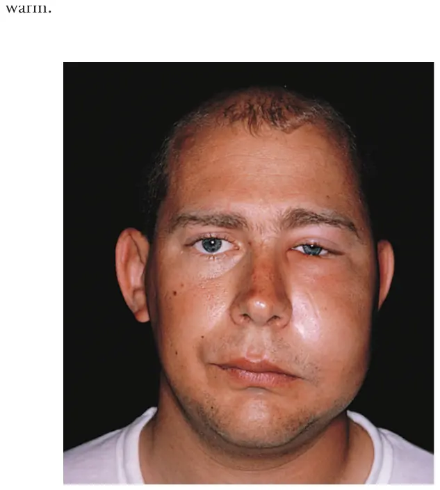
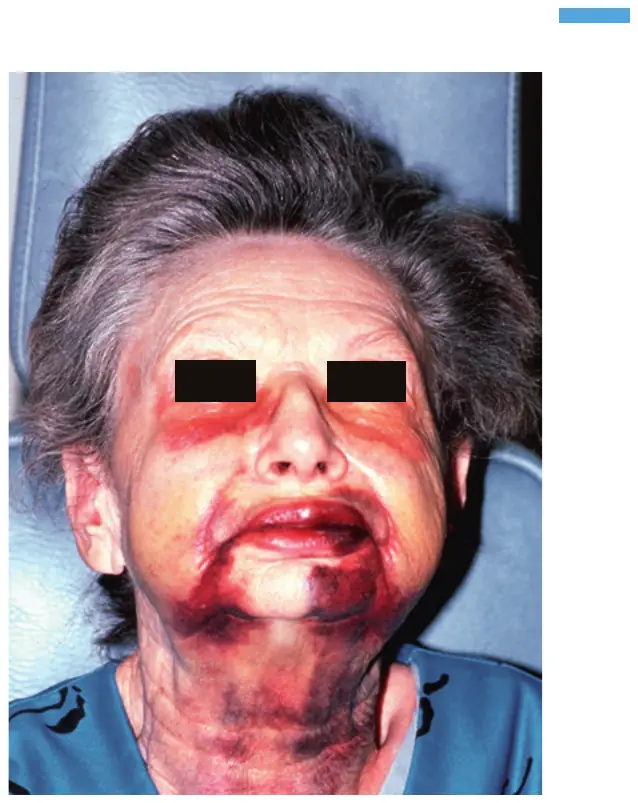

نسخه استخراجشده؛ ترجمه یا تأیید علمی انجام نشده است. وضعیت: captured
چرا رژیم مهم است: بیمار ممکن است به دلیل درد موضعی یا ترس از درد هنگام غذا خوردن از خوردن پرهیز کند. بهعلاوه، استرس جسمی و عاطفی جراحی اغلب اشتها را کم میکند. پس باید دستور مشخص بگیرد.

بیمار دیابتی: باید تشویق شود هرچه زودتر به انسولین و دریافت کالری عادیاش برگردد. برای این بیماران، جراح میتواند در هر جلسه فقط یک سمت دهان را عمل کند تا دریافت کالری عادی بیش از حد مختل نشود.
بهداشت دهان — روزبهروز:
ادم. کشیدن معمولی یک دندان احتمالاً تورمی که بیمار ببیند ایجاد نمیکند؛ ولی کشیدن چند دندان نهفته با رفلکشن بافت نرم و برداشت استخوان میتواند تورم نسبتاً زیادی بدهد.

سیر زمانی ادم: اوج تورم ۳۶ تا ۴۸ ساعت پس از عمل، شروع فروکش در روز سوم یا چهارم، معمولاً تا پایان هفتهی اول کاملاً برطرف. افزایش تورم پس از روز سوم میتواند نشانهی عفونت باشد، نه ادم تازهی جراحی.
یخ: بعضی دندانپزشکان کیسهی یخ یا نخودفرنگی منجمد به کار میبرند تا تورم کمتر شود و بیمار راحتتر باشد؛ ولی شواهدی وجود ندارد که سرد کردن واقعاً این نوع ادم را کنترل کند. اگر استفاده شد: یخ نباید مستقیم روی پوست گذاشته شود — ترجیحاً یک لایه پارچهی خشک میان ظرف یخ و بافت. الگو: ۲۰ دقیقه روی ناحیه، ۲۰ دقیقه بیرون، در بازهی ۱۲ تا ۲۴ ساعت.
روز دوم پس از عمل، نه یخ و نه گرما. از روز سوم به بعد گرما میتواند تورم را سریعتر برطرف کند — کیسهی آب گرم و پد حرارتی. به بیمار هشدار بده گرمای شدید و طولانی به پوستش آسیب میزند.
دو نکته که باید به بیمار گفته شود: تورم موجدار است — به دلیل تغییرات وضعیتی، صبحها بیشتر و عصرها کمتر. و خوابیدن در وضعیت عمودتر با بالش اضافه ادم صورت را کم میکند. تورم متوسط یک واکنش طبیعی و سالم بافت به ترومای جراحی است و ظرف چند روز برطرف میشود.
تریسموس (محدودیت باز شدن دهان). میتواند از کشیدن دندان، از بلاک مندیبولار، یا هر دو ناشی شود. علتش تروما و التهاب حاصل، درگیرکنندهی عضلات جونده است. همچنین میتواند از تزریقهای متعدد بیحسی بیاید، بهویژه اگر سوزن وارد عضله شده باشد. محتملترین عضلهی درگیر: پتریگویید داخلی، که ممکن است حین بلاک عصب آلوئولار تحتانی با سوزن سوراخ شود.
کشیدن جراحی مولر سوم نهفتهی پایین معمولاً درجاتی از تریسموس میدهد، چون پاسخ التهابی بهقدری گسترده است که چند عضلهی جونده را درگیر میکند. تریسموس معمولاً شدید نیست و فعالیت عادی بیمار را مختل نمیکند، ولی برای پیشگیری از نگرانی باید به بیمار هشدار داده شود که احتمالاً ظرف یک هفته برطرف میشود.
اکیموز. در بعضی بیماران خون بهصورت زیرمخاطی و زیرجلدی نشت میکند و مثل کبودی در بافت دهان، صورت یا هر دو دیده میشود. بیشتر در بیماران مسنتر دیده میشود، به دلیل کاهش تونوس بافت، افزایش شکنندگی مویرگی و اتصالات بینسلولی ضعیفتر.
اکیموز خطرناک نیست و درد یا عفونت را بیشتر نمیکند. ولی باید به بیمار هشدار داده شود، چون اگر روز دوم بیدار شود و کبودی در گونه، ناحیهی سابمندیبولار یا قدام گردن ببیند، مضطرب میشود. شروع معمول ۲ تا ۴ روز پس از عمل و برطرف شدن کامل ظرف ۷ تا ۱۰ روز. این اضطراب بهسادگی با دستورات پس از عمل پیشگیری میشود.